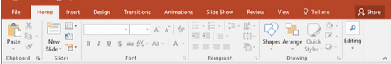

أساسيات البوربوينت
شريط القوائم:

شرح كيفية تنفيذ الأوامر من القوائم أو عبر اختصارات لوحة المفاتيح:
- قائمة ملف File: لإدارة الملف، يتم ذلك بالضغط على تبويب File أعلى يسار الشاشة، أو الضغط على Alt + F.
- لإنشاء ملف جديد، أولاً الضغط على File ثم الضغط على New أو الضغط على Ctrl + N.
- لفتح ملف مخزن سابقاً، أولاً الضغط على File ثم الضغط على Open أو الضغط على Ctrl + O.
- لحفظ التعديلات، أولاً الضغط على File ثم الضغط على Save أو الضغط على Ctrl + S.
- لطباعة العرض، أولاً الضغط على File ثم الضغط على Print أو الضغط على Ctrl + P.
- قائمة الصفحة الرئيسية Home: لتنسيق المحتوى، يتم الضغط على تبويب Home لتظهر الأدوات، أو استخدم الاختصارات التالية:
- لإضافة شريحة جديدة، الضغط على أمر New Slide أو الضغط على Ctrl + M.
- لجعل النص سميكاً، الضغط على أيقونة Bold أو الضغط على Ctrl + B.
- لجعل النص مائلاً، الضغط على أيقونة Italic أو الضغط على Ctrl + I.
- للبحث عن كلمة، الضغط على أمر Find أو الضغط على Ctrl + F.
- قائمة إدراج Insert: لإضافة عناصر متنوعة، يتم الضغط على تبويب Insert ثم اختيار العنصر المطلوب:
- لإضافة جداول، أولاً الضغط على Insert ثم الضغط على Table وتحديد الصفوف والأعمدة.
- لإضافة التخطيطات والرسوم البيانية، أولاً الضغط على Insert ثم الضغط على Chart واختيار النوع المطلوب.
- لإضافة تأثيرات WordArt النصية، أولاً الضغط على Insert ثم الضغط على WordArt واختيار النمط الجمالي.
- لإضافة رابط تشعبي، الضغط على Link أو الضغط على Ctrl + K.
- قائمة تصميم Design: لتغيير المظهر الجمالي، يتم الضغط على تبويب Design.
- لتطبيق شكل جاهز، الضغط على أحد النماذج داخل مجموعة Themes.
- لتغيير لون وخلفية الشريحة، أولاً الضغط على Design ثم الضغط على Format Background ثم اختيار Solid Fill وتحديد اللون.
- لتغيير حجم الشريحة، الضغط على أمر Slide Size واختيار المقاس المطلوب.
- قائمة انتقالات Transitions: لتحديد التأثيرات البصرية عند التنقل بين الشرائح، اضغط Alt + T.
- لاختيار حركة انتقال، أولاً الضغط على تبويب Transitions ثم اختيار تأثير من معرض Transition to This Slide.
- لتحكم في سرعة حركة الانتقال، الضغط على خانة Duration وتعديل الوقت الزمني.
- لتطبيق الحركة على كل العرض، الضغط على زر Apply to All.
- قائمة حركات Animations: لتحريك العناصر، يتم الضغط أولاً على العنصر ثم الضغط على تبويب Animations.
- لإضافة حركة، الضغط على أي حركة داخل معرض Animation.
- لترتيب تسلسل الحركات، الضغط على زر Animation Pane لتظهر لوحة التحكم الجانبية.
- قائمة عرض الشرائح Slide Show: لبدء العرض، يتم الضغط على تبويب Slide Show أو استخدام الأزرار:
- لبدء العرض من البداية، الضغط على زر From Beginning أو الضغط على F5.
- لبدء العرض من الشريحة النشطة، الضغط على زر From Current Slide أو الضغط على Shift + F5.
- لإيقاف العرض تماماً، الضغط على مفتاح Esc.
- قائمة مراجعة Review: لتدقيق العمل، يتم الضغط على تبويب Review.
- لبدء التدقيق الإملائي، الضغط على Spelling أو الضغط على F7.
- لإضافة ملاحظة، الضغط على زر New Comment.
- قائمة عرض View: لتنظيم مساحة الرؤية، يتم الضغط على تبويب View.
- لإظهار المسطرة، الضغط على المربع بجانب Ruler.
- لرؤية كافة الشرائح مصغرة، الضغط على أيقونة Slide Sorter.
التحكم المتقدم في الشرائح وتنسيق النصوص:
- مسح شريحة: أولاً تحديد الشريحة من لوحة المصغرات ثم الضغط على مفتاح Delete أو Backspace، أو الضغط بيمين الفأرة واختيار Delete Slide.
- تحديد مجموعة شرائح متتالية: أولاً الضغط على الشريحة الأولى، ثم الاستمرار في الضغط على مفتاح Shift، ثم الضغط على الشريحة الأخيرة.
- تحديد مجموعة شرائح غير متتالية: أولاً الضغط باستمرار على مفتاح Ctrl، ثم الضغط بالماوس على كل شريحة تريد تحديدها بشكل منفصل.
- تكرار الشريحة: أولاً تحديد الشريحة المطلوبة، ثم الضغط بيمين الفأرة واختيار Duplicate Slide، أو الضغط مباشرة على اختصار Ctrl + D.
- إظهار أو إخفاء شريحة: أولاً الضغط بيمين الفأرة على الشريحة في لوحة المصغرات، ثم الضغط على خيار Hide Slide لإخفائها (وإعادة الضغط عليه لإظهارها).
- الانتقال من شريحة لأخرى في وضع التصميم: يتم ذلك عبر الضغط المباشر على مصغرات الشرائح في الجانب الأيسر، أو استخدام مفاتيح الأسهم Up/Down Arrow Keys.
- تأثيرات الـ WordArt المتقدمة: بعد كتابة النص، أولاً الضغط على النص، ثم الضغط على تبويب Shape Format، ثم الضغط على Text Effects لاختيار تأثيرات الظل أو الانعكاس.
التحكم المتقدم في الشرائح:
- مسح شريحة: أولاً تحديد الشريحة من لوحة المصغرات ثم الضغط على مفتاح Delete أو Backspace، أو الضغط بيمين الفأرة واختيار Delete Slide.
- تحديد مجموعة شرائح متتالية: أولاً الضغط على الشريحة الأولى، ثم الاستمرار في الضغط على مفتاح Shift، ثم الضغط على الشريحة الأخيرة.
- تحديد مجموعة شرائح غير متتالية: أولاً الضغط باستمرار على مفتاح Ctrl، ثم الضغط بالماوس على كل شريحة تريد تحديدها بشكل منفصل.
- تكرار الشريحة: أولاً تحديد الشريحة المطلوبة، ثم الضغط بيمين الفأرة واختيار Duplicate Slide، أو الضغط مباشرة على اختصار Ctrl + D.
- إظهار أو إخفاء شريحة: أولاً الضغط بيمين الفأرة على الشريحة في لوحة المصغرات، ثم الضغط على خيار Hide Slide لإخفائها (وإعادة الضغط عليه لإظهارها).
- الانتقال من شريحة لأخرى في وضع التصميم: يتم ذلك عبر الضغط المباشر على مصغرات الشرائح في الجانب الأيسر، أو استخدام مفاتيح الأسهم Up/Down Arrow Keys.
- تأثيرات الـ WordArt المتقدمة: بعد كتابة النص، أولاً الضغط على النص، ثم الضغط على تبويب Shape Format، ثم الضغط على Text Effects لاختيار تأثيرات الظل أو الانعكاس.
عمل الطالب/ مازن رمضان حسانين رمضان
تحت إشراف/ م.سند
الدروس
Excel
PowerPoint
Network
Internet